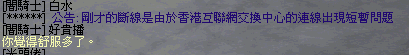

|
2001年8月22日
伺服器第八次服務中斷 GM推卸責任
今天約2:13am，伺服器第八次服務中斷，約五分鐘後玩家可以重新登入，並出現回潮的情況，其後GM向玩家解釋原因，見下圖：

但本網認為GM的解釋是極不合理和不真實的！因為如果是NC
Gamania往香港互聯網交換中心(HKIX)的連線出現問題，那麼整個NC
Gamania的連線也會有問題，因為他們是使用同一連線往HKIX的，但本網網主在問題出現後三秒立即Ping往202.85.231.10，即是天堂更新檔伺服器，是沒有問題的，即是說NC
Gamania往HKIX的連線根本沒有出現問題。加上GM解釋那個是連線問題，為甚麼玩家在重新登入後會回潮？這個很明顯是伺服器本身的問題，而非連線問題。本網認為GM的解釋無疑是推卸責任！ |